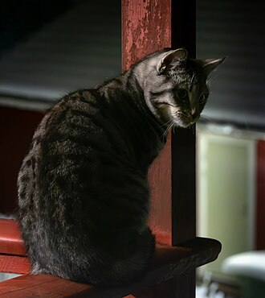
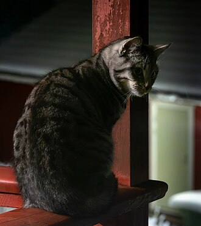

Facts about cats (vision)
Cats have excellent night vision and can see at one sixth the light level required for human vision. This is partly the result of cat eyes having a tapetum lucidum, which reflects any light that passes through the retina back into the eye, thereby increasing the eye's sensitivity to dim light. Large pupils are an adaptation to dim light. The domestic cat has slit pupils, which allow it to focus bright light without chromatic aberration. At low light, a cat's pupils expand to cover most of the exposed surface of its eyes. The domestic cat has rather poor color vision and only two types of cone cells, optimized for sensitivity to blue and yellowish green; its ability to distinguish between red and green is limited. A response to middle wavelengths from a system other than the rod cells might be due to a third type of cone. This appears to be an adaptation to low light levels rather than representing true trichromatic vision. Cats also have a nictitating membrane, allowing them to blink without hindering their vision.
 
